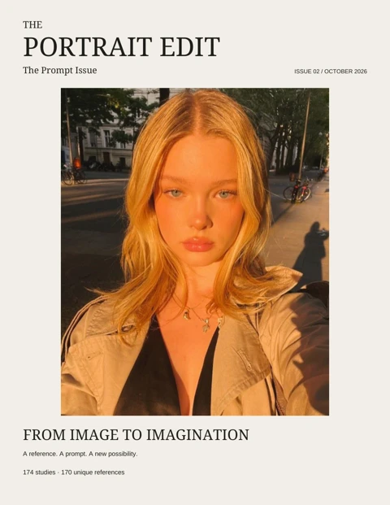

The Prompt Issue

Selected Studies
From the portrait archive
REFERENCE / IMAGE PROMPT / WORKING NOTES
The Studies
Use ← → arrow keys to turn pages

From the portrait archive
REFERENCE / IMAGE PROMPT / WORKING NOTES